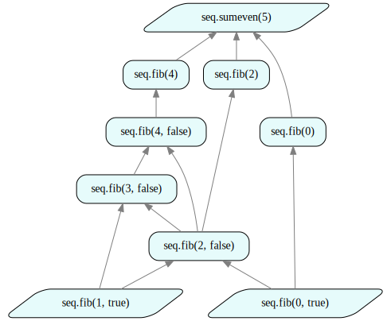

Tutorial 1: Quick Start
How to use this tutorial
- This tutorial is also available in Jupyter notebook format. To access and run the Jupyter notebook version of the tutorial, please sign up for free developer access by following instructions at https://github.com/juliustechco/juliusgraph.
- Additional resources (video demos & blogs) are available at http://juliustech.co.
- To report bugs or request new features, please raise an issue here. To schedule a live demo, please go to http://juliustech.co. Please check out this FAQ page or email us at info@juliustech.co for other general inquiries.
Introduction
Julius is an auto-scaling, low-code, and visual graph computing solution that can build sophisticated data and analytical pipelines with very little code. This tutorial is a quick start guide on the basic concepts and programming API of the Julius Graph Engine. You can find introductory videos and blogs on graph computing at http://juliustech.co if you are new to the subject.
Julius Graph Engine is implemented in Julia programming language. Prior knowledge of Julia is not required to follow this tutorial, as developers mainly interact with Julius GraphEngine through the Julius RulesDSL (a domain specific language), which uses only a small subset of Julia syntax. If you have programming experience in Python or Matlab, you can follow this guide without much difficulty. We will highlight and explain the key Julia specific syntax in this tutorial for Python/Matlab developers.
This tutorial is organized around three key concepts in Julius Graph Engine: Atoms, Rules and Runtime.
1. Atoms
Atom is an abstract Julia type. It is the most fundamental building block of the Julius Graph Engine and denotes atomic operations. The name Atom is chosen because they represents the minimum unit of distribution and caching in the Julius Graph Engine. Atoms cannot be broken apart further for those purposes. The Atom interface enables the Julius Graph Engine to access functionalities implemented in existing software libraries. Atoms can be implemented in all mainstream programming languages, such as Python, C/C++, Java, .Net, R and Julia etc. Existing functions written in these languages can be easily wrapped up under the Atom interface and used in the Julius Graph.
There are several different subtypes of Atoms for different use cases. We first introduce Datom, which is the most generic Atom type that encapsulates any numerical or data operation. The Datom interface only exposes a single method called fwddata!. The ... syntax in the function signature is a Julia specific syntax for catching a varying number of arguments. A subtype of Datom must override this method to implement its specific data or analytical algorithms.
fwddata!(self::Datom, xs...)The fwddata! method can take any number of input data objects in xs and must return a vector of output objects. An Atom can return multiple objects in the return vector.
The following code snippets create a Datom that computes the weighted sum of an input vector of DataFrame objects. DataFrame is the popular choice for representing tabular data in data science applications. Julia's DataFrame provides similar functionalities as Python pandas Dataframe. A developer is free to choose other input/output types for writing their own Datoms, as the xs in the fwddata! can be any data type.
The following cells contain a complete implementation of the weighted sum Datom.
using DataFrames, Base.CoreLogging
using GraphEngine: RuleDSL, GraphVM # RuleDSL package has all the APIs and type definitions of Julius Graph Engine
using GraphIO
# turn off information logging output, only show errors and warning
disable_logging(CoreLogging.Info)
# this method needs to be extended when declaring new datoms
import GraphEngine.RuleDSL: fwddata!
struct WSumDF <: RuleDSL.Datom
weights::Vector{Float64}
end
function fwddata!(self::WSumDF, dfs::DataFrame...)
@assert length(dfs) == length(self.weights) && length(dfs) > 0 "invalid input size"
sum = self.weights[1] .* dfs[1]
for i=2:length(self.weights)
sum .+= (self.weights[i] .* dfs[i])
end
return [sum] # must return a vector
endfwddata! (generic function with 24 methods)Next, we show how to use Datom to compute the weighted sum of DataFrames.
using Random
ws = [1.0; 2.0; 3.0]
xlen = 10
xs = [rand(xlen), rand(xlen), rand(xlen)]
wsumd = WSumDF(ws)
dfs = [DataFrame(v=x) for x in xs] # create 3 data frames
ysd = RuleDSL.fwddata!(wsumd, dfs...)
first(ysd)10 rows × 1 columns
| v | |
|---|---|
| Float64 | |
| 1 | 2.33398 |
| 2 | 1.58804 |
| 3 | 3.03259 |
| 4 | 3.09591 |
| 5 | 4.7524 |
| 6 | 3.94189 |
| 7 | 1.66798 |
| 8 | 3.02437 |
| 9 | 1.76869 |
| 10 | 4.36206 |
The Julius Graph Engine offers a convenient macro RuleDSL.@datom for writing new datoms, such that the same weighted sum datom can be implemented more compactly. The RuleDSL.@datom macro translates the code below to a code block similar to the WSumDF implementation above. The two versions are equivalent to each other in functionality. Besides making the code more compact and easier to read and write, RuleDSL.@datom is also future proof, in that the macro would automatically generate conversion code in case of future Julius API changes. Therefore, it is strongly recommended to use the RuleDSL.@datom macro to declare new Datom types.
# `WSumDF2` is the name of `Datom`'s type
RuleDSL.@datom WSumDF2 begin
weights::Vector{Float64} # the member of WSumDF2
function fwddata!(dfs::DataFrame...) # self::WSumDF2 is automatically inserted as the first argument
sum = zeros(nrow(dfs[1]))
for (w, df) in zip(weights, dfs) # here weights is translated to self.weights, accessing the member
sum .+= w .* df[!, 1]
end
return [DataFrame(; wsum=sum)] # return a vector
end
end
wsumd2 = WSumDF2(ws)
ysd2 = RuleDSL.fwddata!(wsumd2, dfs...)
# Horizontally concatenate data frames for comparison
hcat(ysd..., ysd2...; makeunique=true)10 rows × 2 columns
| v | wsum | |
|---|---|---|
| Float64 | Float64 | |
| 1 | 2.33398 | 2.33398 |
| 2 | 1.58804 | 1.58804 |
| 3 | 3.03259 | 3.03259 |
| 4 | 3.09591 | 3.09591 |
| 5 | 4.7524 | 4.7524 |
| 6 | 3.94189 | 3.94189 |
| 7 | 1.66798 | 1.66798 |
| 8 | 3.02437 | 3.02437 |
| 9 | 1.76869 | 1.76869 |
| 10 | 4.36206 | 4.36206 |
We also define another Datom type RandDF that returns uniform random numbers in a Dataframe for later use. The meanv parameter specifies the mean of the uniform random numbers.
RuleDSL.@datom RandDF begin
n::Int
meanv::Float64
function fwddata!()
return [DataFrame(v=(rand(n) .- 0.5 .+ meanv))] # create a random vector
end
endfwddata! (generic function with 26 methods)2. Rules
The Atom and its subtype Datom are generic abstractions for atomic numerical and data processing algorithms. However, just having atoms is not enough to build a working system or application, as we still need to pipeline the atoms in a meaningful way. The RuleDSL is a high level domain specific language (DSL) designed exactly for that purpose. The RuleDSL specifies precisely how atoms should be connected to one another to form a computation DAG (directed acyclic graph) for the entire system.
The RuleDSL is a graph programming language, and has a very limited syntax designed specifically for creating DAGs. It doesn't support most constructs in conventional programming languages such as variables, functions, branches, loops or inheritance. The RuleDSL only contains declarations of discrete rules, so it is much easier to learn and use in practice. The Atom is an interface to traditional programming languages and libraries. The combination of Rules and Atoms is extremely powerful and expressive, and they offer the best of traditional and graph programming. Together they can build systems of any scale and complexity with minimal amounts of code.
2.1 RuleDSL Syntax
We use a Fibonacci sequence as an example to describe the RuleDSL syntax. The following is a Fibonacci like sequence using the WSumDF datom we just defined. This example is different from the classic Fibonacci sequence in that its two initial terms are random vectors instead of scalars 0 and 1; thus the recursive summation is applied to random vectors instead of scalars.
RuleDSL.@addrules seq begin
fib(n::Int) = RuleDSL.Alias(fib(n, Val(n <= 1))) # binds the 2nd parameter for convenience, Alias is an atom that passes the outputs of other rules
fib(f::Float64) = RuleDSL.Alias(fib(Int(floor(f)))) # adapting rule for a floating point parameter
fib(n::Int, isend::Val{false}) = begin # defines the recursion of Fibonacci sequence
WSumDF[[1.0, 1.0]](fib(n - 1, Val(n <= 2)), fib(n - 2, Val(n <= 3)))
end
fib(n::Int, isend::Val{true}) = RandDF[10, Float64(n)]() # using the RandDF atom defined earlier, random vector of length 10.
endThe RuleDSL.@addrules is a macro provided by the Julius Graph Engine for writing rules using the RuleDSL. The first argument seq is a user defined namespace to help organize related rules, followed by a list of discrete rules between the begin and end. There are four rules defined in the above declarations, the basic syntax of individual rules are:
rulename(arg1::Type1, arg2::Type2, ...) = AtomName[a1, a2, a3...](deprule1(args1...), deprule2(args2...), ...)For example, in the rule:
fib(n::Int, isend::Val{false}) = WSumDF[[1.0, 1.0]](fib(n - 1, Val(n <= 2)), fib(n - 2, Val(n <= 3)))fibis the rule name, the full name of a rule includes its namespace, in this case it isseq.fibnandisendare two parameters to this rule, with typeInt, Val{false}, all rule parameters must have corresponding types in the rule declarations. TheVal{false}is a Julia templatized type that enables value based pattern matching (matching the valuefalsein this case).WSumDFis the atom name which was defined earlier, the outer square bracket encloses the parameter to the atom's constructor[1.; 1.]in the square bracket is the parameter to the DatomWSumDF's constructor, i.e., it binds to the weights parameter. TheWSumDF[[1.; 1.]]in the rule declaration is directly translated to a constructor call ofWSumDF([1.; 1.])to create theWSumDFobject at run time.- the
fib(n-1, Val(n<=2)), fib(n-2, Val(n<=3))inside the parenthesis is a list of dependent rules, each of which must map to existing rules, so that the Graph Engine can recursively expand the rules at run time to create a complete computational graph. A rule can refer to other rules (including itself) as dependencies. In this example, it refers to the same rule as dependency to define the recursive sum of the Fibonacci sequence.
Besides the Datom WSumDF we have just defined, these seq.fib rules also use the Atoms defined in the GraphEngine.RuleDSL package, such as RuleDSL.Alias. The Julius Graph Engine comes with a rich set of pre-built Atoms that can be used by referring to their full Atom names. The atom RuleDSL.Alias is a special atom that simply passes the results of the dependent rules; it creates an additional rule name to improve readability. The Alias atom is often used for binding certain rule parameters to concrete values, as shown in the first seq.fib rule above.
2.2 Polymorphism and Rule Matching
The RulesDSL supports multiple dispatch with type and value based polymorphism. As a result it can express complex and dynamic data transformation or analytical logic. Multiple rules can have the same name but different argument types. For example we have four rules of seq.fib with different parameter types above. At run time, the rule with the most precise parameter type match is invoked to create a node in the graph, and this process continues recursively until all the dependent nodes are created in the graph. The final result of this rule matching and expansion process is a full computational graph (a DAG), which is ready for execution.
The value based polymorphism is supported using Julia's templatized type, such as Val{true} or Val{false}. For example, in the first seq.fib rule above, if n <= 1, the isend parameter of the dependent rules become an instance of the type Val{true}, which would match to the last seq.fib rule governing the initial terms.
To fully understand this process, let's go through the creation of a computational graph for seq.fib(3.2) step by step. We first create then run the computational graph for seq.fib(3.2).
# RuleDSL.@ref is a macro to create a concrete instance to a rule
ref = RuleDSL.@ref seq.fib(3.2)
# configuration object to pass common parameters to run time
config = RuleDSL.Config()
# run the computation according to the defined rules to create output in the Set
gs = GraphVM.createlocalgraph(config, RuleDSL.GenericData());
GraphVM.calcfwd!(gs, Set([ref]));Julius Graph Engine provides an intuitive web UI to visualize and interact with the resulting computational graph, the following cell shows the resulting DAG and a link for the interactive web UI, where a user can access the entire calculation with all the intermediate results.
# override label display on the node to show additional rule parameters
# user can override the nodelabel function to customize the labels on the nodes
import GraphEngine.RuleDSL: nodelabel
function nodelabel(::AbstractGraphState, ref::NodeRef)
hdr = "$(ref.ns).$(ref.name)"
ps = join(simplerepr.(ref.params), ", ")
return "$hdr($ps)"
end
# start a local data server that feeds data to the web UI
gss = Dict{String,RuleDSL.AbstractGraphState}()
port = GraphVM.drawdataport()
@async GraphVM.startresponder(gss, port)
svg = GraphIO.postlocalgraph(gss, deepcopy(gs), port, true, key="fib");
GraphIO.postsvg(svg, "quickstart_1.svg")view graph data at http://127.0.0.1:8080/ui/depgraph.html?dataurl=127.0.0.1:7752_fib
starting data service at port 7752

Figure 1 - Fibonacci
In this example, the steps to create the entire computation DAG includes:
- The best matching rule for
seq.fib(3.2)isfib(f::Float64)=RuleDSL.Alias(fib(Int(floor(f)))), which is aliased toseq.fib(3)because the parameterInt(floor(f))in the dependent rule evaluates to 3. - The best matching rule for
seq.fib(3)isfib(n::Int)=RuleDSL.Alias(fib(n, Val(n<=1))), whose dependent rule isseq.fib(3, Val(false))whereVal(false)is an instance of templatized typeVal{false}. - The best matching rule for
seq.fib(3, Val(false))isfib(n::Int, isend::Val{false})=WSumDF[[1.; 1.]](fib(n-1, Val(n<=2)), fib(n-2, Val(n<=3))), with two dependent rules:seq.fib(2, Val(false))andseq.fib(1, Val(true)). - The best matching rule for
seq.fib(2, Val(false))is againfib(n::Int, isend::Val{false})=WSumDF[[1.; 1.]](fib(n-1, Val(n<=2)), fib(n-2, Val(n<=3)), with two dependent rulesseq.fib(1, Val(true))andseq.fib(0, Val(true)) - The best matching rule for
seq.fib(1, Val(true))andseq.fib(0, Val(true))isfib(n::Int, isend::Val{true})=RandDF[10, Float64(n)](), which do does not have any further dependencies. Now the graph expansion/creation is complete.
From this expansion process, the nodes created in the graph are essentially rules binded with concrete rule parameters. Nodes in the graph are represented by a ReleDSL.NodeRef type, which is nothing but a reference to the underlying rule and a list of its rule parameters. The nodes are guaranteed to be unique in a graph, i.e., there can't be multiple nodes with identical underlying rule and parameters in a graph. The hash value of RuleDSL.NodeRef object is often used as a unique identifier for nodes in the graph. Therefore, the relationship between rules, nodes and their hash are:
rule in RuleDSL $ \xrightarrow{\text{bind to concrete rule parameters}} $ node in graph as RuleDSL.NodeRef $ \xrightarrow{\text{hash}} $ unique node ID
All the intermediate results of executing a computational DAG are held in a gs object, which is of type GraphVM.GraphState. The result of every node can be retrieved using the getdata method with the hash value of the corresponding RuleDSL.NodeRef object.
The RuleDSL.@ref is a convenient macro for creating RuleDSL.NodeRef from a rule. The following cells show how two RuleDSL.NodeRef objects can be created from the same rule but with different parameters thus having different hash IDs. Both of their values can be retrieved by getdata.
fib2 = RuleDSL.@ref seq.fib(2, Val(false))
fib3 = RuleDSL.@ref seq.fib(3, Val(false))
println(typeof(fib2) => hash(fib2))
println(typeof(fib3) => hash(fib3))
v2 = RuleDSL.getdata(gs, hash(fib2))
v3 = RuleDSL.getdata(gs, hash(fib3))
hcat(v2..., v3...; makeunique=true)10 rows × 2 columns
| v | v_1 | |
|---|---|---|
| Float64 | Float64 | |
| 1 | 0.970256 | 1.7066 |
| 2 | 0.718173 | 1.69931 |
| 3 | 0.901956 | 1.88341 |
| 4 | 1.33865 | 2.44973 |
| 5 | 0.575761 | 1.08489 |
| 6 | 0.138334 | 0.684488 |
| 7 | 1.48498 | 2.89077 |
| 8 | 1.37087 | 2.5743 |
| 9 | 0.898616 | 2.28308 |
| 10 | 0.866972 | 2.15134 |
2.3 Dynamic Dependency
A rule's dependency can be dynamic, i.e., the number and type of dependencies can be different according to the rule's parameters. For example the following cell defines a sum of all the even terms in the Fibonacci sequence:
RuleDSL.@addrules seq begin
sumeven(n::Int) = begin
WSumDF[fill(1.0, length(0:2:n))](RuleDSL.@ref(fib(i) for i in 0:2:n)...)
end
endThe RuleDSL.@ref(fib(i) for i in 0:2:n) above creates a vector of RuleDSL.NodeRef object from the list comprehension inside. The ... is a special syntax in rule dependency that signals dynamic rule dependencies, it can follow any valid Julia expression or functions that returns an instance or a vector of RuleDSL.NodeRef.
RuleDSL.@ref seq.fib(5)seq:fib/5RuleDSL.@ref(seq.fib(i) for i in 0:2:5)3-element Vector{GraphEngine.RuleDSL.NodeRef}:
seq:fib/0
seq:fib/2
seq:fib/4The results of the dynamic dependency are shown in the graph below.
# create a concrete instance to a rule
sumeven = RuleDSL.@ref seq.sumeven(5)
# run the computation according to the defined rules to create the desired output
gs = GraphVM.createlocalgraph(config, RuleDSL.GenericData());
GraphVM.calcfwd!(gs, Set([sumeven])); # we want to compute sumeven
svg = GraphIO.postlocalgraph(gss, gs, port, true; key="even");
GraphIO.postsvg(svg, "quickstart_2.svg")view graph data at http://127.0.0.1:8080/ui/depgraph.html?dataurl=127.0.0.1:7752_even

Figure 2 - Dynamic Dependency
2.4 Multi-line Rule
So far, all rules we have shown are single line declarations. Sometimes it is convenient to run simple calculations or data transformations when declaring a rule. Multi-line declarations is allowed by wrapping them up within begin ... end , as shown in the following example of an equivalent declaration of rule seq.sumeven(n::Int). The rule can be easier to read using the local variables dep, ws:
RuleDSL.@addrules seq begin
sumeven2(n::Int) = begin
deps = RuleDSL.@ref(fib(i) for i in 0:2:n)
ws = fill(1.0, length(deps))
WSumDF[ws](deps...)
end
end3. Runtime and GraphData
The combination of Rules and Atoms are extremely powerful and expressive. They can build any data and analytical pipeline as a directed acyclic graph (DAG) regardless of its complexity, with minimal coding in the RuleDSL. However, a system needs additional runtime configurations to function properly. Runtime configuration is an important aspect of system building, which is the topic of this section.
Runtime configuration usually includes the following attributes:
- Distribution: whether a system is running on a local computer or a distributed computing environment
- Caching: should the intermediate results being cached, and how/where it is cached
- Adjoint Algorithmic Differentiation (AAD): whether the system execution includes AAD
- Batch or Streaming: whether the system is running once in batch mode, or running in live mode with continuous streaming data
In a traditional development environment, separate and duplicated codebases are created in order to support different runtimes. For example, it is common for a bank to have separate and dedicated systems for each combination of (runtime, applications), such as an end of day batch system for Macro trading, a live intraday system for Equity e-trading, a test/UAD environment for XVA, etc. These specialized and dedicated systems often have different software, hardware and configurations. As a result, the number of these specialized systems can quickly multiply and drive up the overall complexity and support cost, while at the same time hurt the firm's overall consistency and reliability.
The Julius Graph Engine provides a number of common runtime configurations out of the box. Different runtime environments can be created on-demand from a common set of Rules and Atoms that define the business logic. This removes the need for duplicated implementation of runtime configurations for individual systems, leading to a significant reduction in support cost and system complexity.
The Julius Runtimes are implemented as different GraphData types. In the previous sections, we have already seen the GenericData in action, which is a derived type of GraphData. The following table shows some of the most common GraphData configurations in Julius:
| GraphData Type | Caching | Batch/Stream | support AAD | supported Atom type | Distribution |
|---|---|---|---|---|---|
RuleDSL.GenericData | yes | batch | no | any | yes |
RuleDSL.NumericalData | yes | batch | yes | Quantom only | yes |
RuleDSL.StreamData | no | stream | no | any | yes |
Any GraphData can be used in either local or distributed mode. We only work with a local runtime in this notebook, but subsequent tutorials will show the distributed setup. The NumericalData is a GraphData specialized for numerical computations with AAD, which we will cover in another tutorial.
Next, we will show how streaming use cases can be easily created using the StreamData.
3.1 Streaming
Streaming is a common runtime use case, e.g., for live intraday pricing and risk of a trading desk. With the RuleDSL.StreamData runtime, Julius can turn any computational graph into a streaming system with a few lines of code changes.
In the following few cells, we take the Fibonacci sequence as defined above, which operates in the batch mode, and turn it into a streaming processing. Its initial inputs, the fib(0) and fib(1) terms, become the streaming input of random vectors.
To show the effects of streaming, we create a new Datom that computes the running average of all the streamed input Dataframes.
# computes the running average of all the value being streamed
RuleDSL.@datom StreamAverage begin
sum::DataFrame = DataFrame()
cnt::Vector = [0]
function fwddata!(x::DataFrame)
if cnt[1] == 0
append!(sum, x)
else
sum .+= x
end
cnt[1] += 1
[ sum ./ cnt[1] ]
end
endfwddata! (generic function with 27 methods)Then we define a generic rule for computing stream average from any node. One of the most powerful features of Julius Rules DSL is the high order rule, which is a rule declaration that takes a RuleDSL.NodeRef object as parameter. A high order rule can declare a generic pattern that is applicable to any node in a graph. We will cover high order rules in more detail in a later map/reduce tutorial.
In the following high order rule for stream average, the ... operator in the dependency indicates dynamic dependency, which is just the input node as defined by the NodeRef parameter. The seq.streamaverage is therefore a generic operation that can be applied to any other node as defined in its argument ref.
RuleDSL.@addrules seq begin
streamaverage(ref::RuleDSL.NodeRef) = StreamAverage(ref...)
end
# sources of streaming inputs
srcs = [
RuleDSL.@ref(seq.fib(0, Val(true))), RuleDSL.@ref(seq.fib(1, Val(true)))
]
sd = RuleDSL.StreamData(Set(hash.(srcs)), 1) # create StreamData with queue buffer length of 1
ref = RuleDSL.@ref seq.fib(5)
savg = RuleDSL.@ref seq.streamaverage(ref)
gs2 = GraphVM.createlocalgraph(config, sd) # create a graph using StreamData
GraphVM.calcfwd!(gs2, Set{NodeRef}(savg)); # set up the pipeline of streamingThe calcfwd! call above builds up streaming pipelines between nodes. In streaming mode, the connection between nodes in the graph are message queues, where each node runs asynchronously to process the message from the input queue, and then puts the results into the output queue.
The following cell streams 20,000 different initial inputs, which are randomly drawn by the datom RandDF. Since the final output's atom is StreamAverage, which computes the running average of all the streamed data, the net result is essentially to calculate the Fibonnaci sequence using a Monte Carlo simulation of 20,000 paths, and the results are all close to 5, which is the correct value of the 5th term of the classic Fibonacci sequence.
Unlike the mini-batch streaming processing in Spark, the streaming implementation in Julius is fully pipelined, where different nodes are processing different streaming inputs concurrently at any given time. As a result, Julius streaming is extremely fast, achieving more than 10,000 messages per second.
@time RuleDSL.pushpullcalc!(gs2, 10000) # stream 10,000 messages, this call can be made multiple times to stream more data
@time RuleDSL.pushpullcalc!(gs2, 10000)
avg = RuleDSL.getdata(gs2, hash(savg))[1] # [1] is because the output is a vector of 110 rows × 1 columns
| v | |
|---|---|
| Float64 | |
| 1 | 5.00215 |
| 2 | 5.01247 |
| 3 | 4.98262 |
| 4 | 5.00137 |
| 5 | 5.0158 |
| 6 | 5.00704 |
| 7 | 5.00342 |
| 8 | 5.0053 |
| 9 | 5.00642 |
| 10 | 5.01311 |
Once we are done with streaming, we can tear down the streaming pipeline by calling stopstream! on StreamData to reclaim the resources. Once stopstream! is called, it will no longer accept any more incoming streaming data.
RuleDSL.stopstream!(sd);GraphVM.servedata(gss, gs2, port; key="stream");
# revert back nodelabel to default definition
nodelabel(gs::RuleDSL.AbstractGraphState, ref::RuleDSL.NodeRef)=haskey(ref.meta, :label) ? ref.meta[:label] : "$(ref.ns).$(ref.name)"nodelabel (generic function with 4 methods)4. Exercise
Thanks for your attention! Now that you have learned the basics of the Julius Graph Engine, it is time to get your hands dirty and write your own rules and atoms! Here is a suggested exercise:
Modify the streaming use case above, to also report the calculation of Monte Carlo error, which is the standard deviation of the samples divided by the square root of the number of samples. You can take advantage of the following relationship $\sigma^2(x)=E[x^2] - E^2[x]$ by tracking the average of squares. Then the MC error is $\frac{\sigma(x)}{\sqrt{n}}$ where $n$ is the number of samples streamed.
There can be different approaches for doing this:
- create a new Datom and corresponding rule, similar to
StreamAverageandseq.streamaverage, that computes the running mean and MC error, and returns them as two DataFrames in the output vector, or two columns in the same DataFrame. - create new Datoms for arithmetic operations like square, subtraction and sqrt on type DataFrame, then compute the MC error by writing new rules that connect these new datoms. You can consider writing a generic high order rule that works for any node and any Julia function. A rule can take a Julia function as a parameter!
The first approach is quick and fast, while the second approach is more generic and reusable, with the additional benefit of being able to see the intermediate results.
This page was generated using Literate.jl.